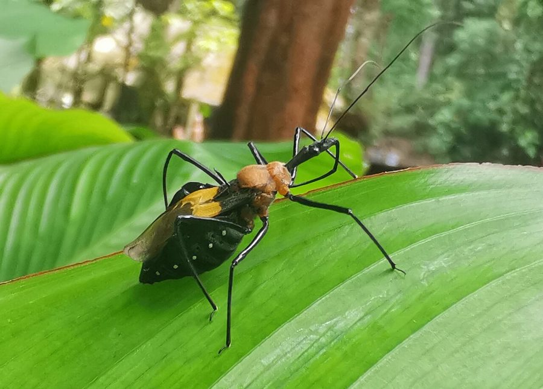

फोर्क्ड असासिन बगForked Assassin Bug
Sycanus bifidus · Reduviidae · INS-0282

- Scientific name वैज्ञानिक नाम
- Sycanus bifidus (Fabricius, 1787)
- Family कुल
- Reduviidae
- Hindi हिंदी
- फोर्क्ड असासिन बग
- Local names स्थानीय नाम
- forked assassin bug
- Status here यहाँ की स्थिति
- native
- Movement आवागमन
- Resident, here all year
- Known from कहाँ दर्ज
- Others have published records from the wider Awadh–Purvanchal plain, none yet from Basti–Ayodhya अवध–पूर्वांचल से दूसरों के प्रकाशित अभिलेख, बस्ती–अयोध्या से अभी नहीं
- IUCN IUCN
- not evaluated
- Review समीक्षा
- not yet reviewed
When to look कब देखें
Expected mainly in May, June, July, August, September, October, November. मुख्यतः मई, जून, जुलाई, अगस्त, सितंबर, अक्टूबर, नवंबर में अपेक्षित।
Tell it apart from इनसे अलग पहचानें
फोर्क्ड असासिन बग / Forked Assassin Bug
Sycanus bifidus (Fabricius, 1787) — Reduviidae
फोर्क्ड असासिन बग — यह एक बड़ा, चमकदार नीला-काला शिकारी बग है जिसकी पीठ पर एक सीधा खड़ा कांटा (स्कूटेलर स्पाइन) होता है जिसका सिरा दो शाखाओं में बंटा (द्विशृंगी) होता है। इसके पंखों के किनारे लाल-नारंगी होते हैं। यह बागों और खेतों की झाड़ियों में छिपकर हानिकारक सूंडियों और कीड़ों को अपने नुकीले सूंड़ से छेदकर उनका रस चूसता है।
Quick Identification त्वरित पहचान
| Feature | Description |
|---|---|
| Coloration | Shining bluish-black body with reddish-ochraceous apical margins of the corium |
| Scutellar spine | Prominent, obliquely erect dorsal spine with a distinctly bifid (forked) apex |
| Abdomen | Broadly dilated lateral connexivum reflexed strongly upwards |
| Rostrum | Thick, curved, three-segmented piercing beak resting in a prosternal groove |
| Stalking habit | Deliberate, stealthy walking over shrub foliage with long exploratory antennae |
Large, shining bluish-black assassin bug recognized by the diagnostic erect forked spine on its scutellum, upward-curled abdominal margins, and reddish-orange apical wing markings.
Field tip: Inspect mango orchard branches and overgrown pulse hedges for large black bugs stalking slowly among caterpillar webs.
हिंदी: चमकदार नीले-काले शरीर और पीठ पर दोमुंहे कांटे वाला बड़ा शिकारी बग जिसके पंखों के किनारे नारंगी होते हैं और पेट के किनारे ऊपर मुड़े होते हैं।
Morphology आकारिकी
Biometrics as given by Distant (1904):
| Measurement | Value | Source |
|---|---|---|
| Total length | 21 to 22 millim. | Distant (1904) |
The head is elongate, cylindrical, about as long as the pronotum and scutellum combined. The antennae are long and filiform. The rostrum is robust and curved. The pronotum is granulate, blackish-piceous. The scutellum possesses a long, obliquely erect spine whose apex is strongly bifid into two distinct divergent points. The hemelytra are shining bluish-black with reddish-ochraceous apical margins on the corium. The abdomen is laterally dilated, particularly along the third and fourth segments, with reflexed margins. Distant (1904) records the length as 21 to 22 mm.
हिंदी: इसकी लंबाई इक्कीस से बाईस मिलीमीटर होती है (Distant 1904)। इसका सिर लंबा होता है। पीठ पर लगा कांटा ऊपर से दोमुंहा होता है जो इसकी सबसे बड़ी पहचान है। पंख नीले-काले और किनारे नारंगी होते हैं।
Behaviour & Ecology व्यवहार और पारिस्थितिकी
A solitary diurnal ambush and pursuit predator on arboreal foliage. It stalks deliberately over leaves and stems, using its sensitive antennae to detect vibrational and olfactory cues of prey. Upon locating a caterpillar, it lunges forward, grasps the victim firmly with its forelegs, and inserts its stout rostrum into the prey's body, injecting neurotoxic and proteolytic saliva that rapidly immobilizes the insect and liquefies its internal tissues.
हिंदी: यह दिन में अकेला शिकार करता है। यह पत्तों पर धीरे-धीरे आगे बढ़कर सूंडियों को अपने अगले पैरों से जकड़ लेता है और अपने नुकीले सूंड़ से उनमें पाचक रस घोल देता है जिससे शिकार तुरंत सुन्न हो जाता है।
Life Cycle / Phenology जीवन चक्र
Breeds during the monsoon and post-monsoon months. Females deposit cylindrical, brown-collared eggs in tight compact clusters glued to twigs or the undersides of leaves. The wingless nymphs resemble miniature adults, displaying bright reddish abdomens that darken with each moult. Nymphs pass through five instars over five to seven weeks, actively hunting small insects. Adults live for several months, overwintering in sheltered tree bark.
हिंदी: मादा टहनियों पर अंडों का गुच्छा चिपकाती है। अंडों से निकले छोटे बच्चे लाल पेट वाले होते हैं जो पांच बार केंचुल बदलकर बड़े होते हैं। वयस्क कीड़े कई महीनों तक जीवित रहते हैं।
Host Plants or Prey आहार
A polyphagous pursuit predator feeding on a wide variety of soft-bodied insect pests on trees and crops, particularly defoliating caterpillars and beetle grubs. Adults capture and feed upon soft-bodied larvae on Mango (Mangifera indica) and leguminous shrubs.
हिंदी: यह सागौन के पतंगे, सेना सुंडी (आर्मीवर्म), बैंगन के फल छेदक और दालों की फलियों के कीड़ों का शिकार करता है और फसलों को नुकसानदेह कीड़ों से बचाता है।
Predators / Natural Enemies शत्रु
Adult assassin bugs are defended by chemical secretions and their potent bite, but are occasionally taken by larger birds such as crows or large mantises. Egg clusters are attacked by tiny scelionid parasitoid wasps.
हिंदी: इसके कड़वे स्वाद और तेज डंक के कारण कम शिकारी इसे छूते हैं, लेकिन कभी-कभी पक्षी या बड़े मेंटिस इसे खा लेते हैं। अंडों को परजीवी ततैया नष्ट करते हैं।
Agricultural / Human Relevance कृषि प्रासंगिकता
Highly beneficial for agroforestry and rural horticulture. It suppresses outbreaks of defoliating caterpillars in teak plantations, mango orchards, and pulse crops naturally without requiring chemical insecticides. Handlers should use forceps or containers, as a defensive stab from its rostrum causes severe burning pain.
हिंदी: यह बागवानी और जंगलों के लिए अत्यंत लाभकारी मित्र कीट है जो हानिकारक सूंडियों को खत्म करता है। हाथ से पकड़ने पर यह बहुत तेज और दर्दनाक डंक मार सकता है।
Expected Locally स्थानीय रूप से अपेक्षित
Not a field record. Written from published accounts for eastern Uttar Pradesh. No confirmed local sighting yet — if you have seen it, that is what the atlas needs.
अभी तक स्थानीय पुष्टि नहीं। यह विवरण प्रकाशित स्रोतों से है, किसी अवलोकन से नहीं।
Inhabits fruit orchards, woodland scrub, and overgrown agricultural hedges across the middle Gangetic plains. Observers in eastern Uttar Pradesh should check mango groves and arhar field borders during post-monsoon months for large black bugs with reflexed abdomens.
GBIF holds published records from the wider Awadh–Purvanchal plain, none yet from Basti–Ayodhya.
A first local record for the atlas would be a clear photograph showing diagnostic features, accompanied by date, time, and precise location coordinates sent through the project's About page.
हिंदी: बस्ती और अयोध्या के आम के बागों और अरहर के खेतों की मेड़ों पर यह बड़ा शिकारी बग मिल सकता है। इसकी पीठ के कांटे वाली साफ फोटो एटलस को भेजें।
Distribution वितरण
Global range: Widely distributed in the Oriental region, from India and Sri Lanka through Bangladesh, Myanmar, to China and Java.
In India: Found across northern, central, and eastern states in forested and orchard tracts.
In Uttar Pradesh: Distributed throughout the plains wherever dense orchards and scrub survive.
In Basti district / eastern UP: Documented across rural agroforestry ecosystems based on published reduviid records.
हिंदी: यह भारत, बांग्लादेश, म्यांमार और चीन में पाया जाता है। उत्तर प्रदेश के पुराने बागों और झाड़ीदार इलाकों में इसका नियमित फैलाव है।
Research Questions शोध प्रश्न
- What is the functional feeding capacity of adult Sycanus bifidus on Hyblaea puera larvae in plantation belts?
- How does the venom composition of Sycanus bifidus compare with other harpactorine reduviids? / क्या इसका जहरीला पाचक रस सूंडियों को तुरंत बेअसर कर देता है?
- What micro-climate conditions in mango orchards promote nymphal overwintering survival?
- A schoolchild can watch an assassin bug stalk a caterpillar on a shrub without touching the insect / क्या कोई बच्चा बिना छुए इस बग को झाड़ी पर सूंड़ी का शिकार करते देख सकता है?
- Which structural characteristics of the bifid scutellar spine provide structural defense against vertebrate predators?
हिंदी: क्या सागौन के बागों में यह बग रासायनिक दवाओं की जरूरत खत्म कर सकता है? क्या बच्चे इसे सुरक्षित दूरी से शिकार करते देख सकते हैं?
Similar Species मिलती-जुलती प्रजातियाँ
| Species | How to tell apart | हिंदी | |
|---|---|---|---|
| Red Cotton Bug \ | Dysdercus cingulatus | Pyrrhocorid plant-feeding bug with bright red and white transverse bands; lacks predatory raptorial legs and dorsal spine | लाल कपास बग लाल और सफेद रंग का शाकाहारी बग है जिसकी पीठ पर कोई कांटा नहीं होता |
| Sycanus collaris | Related reduviid assassin bug with simple, non-bifid scutellar spine and reddish pronotal collar | इसी वंश का दूसरा शिकारी बग जिसके कांटे का सिरा दोमुंहा नहीं होता और गर्दन लाल होती है |
Field rule: Large bluish-black assassin bug with an erect, distinctly two-pronged (bifid) spine on the scutellum and upturned abdominal margins.
हिंदी: पीठ पर सीधा खड़ा दोमुंहा कांटा और ऊपर की ओर मुड़े हुए पेट वाला बड़ा चमकदार नीला-काला शिकारी बग।
Taxonomy & Classification वर्गीकरण
Original description. Fabricius (1787), Mantissa Insectorum, vol. 2, p. 312; described under the genus Reduvius.
Subspecies. Monotypic species across its South Asian distribution.
Family and order placement. Belongs to the assassin bug family Reduviidae (subfamily Harpactorinae, tribe Harpactorini), order Hemiptera, class Insecta.
Phylogenetic notes. Placed in the genus Sycanus Amyot & Serville, characterized by the erect scutellar spine and laterally dilated abdomen.
IUCN status rationale. Not currently evaluated on the IUCN Red List of Threatened Species.
हिंदी: इसे 1787 में फैब्रिसियस ने Reduvius के तहत वर्णित किया था। बाद में इसे रेडुविइडी परिवार के Sycanus जीनस में रखा गया।
Photo Gallery फोटो गैलरी
No photos yet — add field photos to media/species/forked_assassin_bug/ and run node scripts/sync_photos.js.
Photos needed आवश्यक फोटो
- [ ] Adult bug on leaf showing bifid spine on scutellum (पत्ते पर बैठा बग जिसकी पीठ का दोमुंहा कांटा दिखे)
- [ ] Assassin bug feeding on captured caterpillar (सूंड़ी का रस चूसता हुआ शिकारी बग)
- [ ] Cluster of cylindrical eggs on tree bark (पेड़ की छाल पर चिपके अंडों का गुच्छा)
References संदर्भ
- Original description: Fabricius, J. C. (1787). Mantissa Insectorum sistens species nuper detectas. Vol. 2. C. G. Proft, Hafniae, 382 pp.
- Distant, W. L. (1904). The Fauna of British India, Including Ceylon and Burma: Rhynchota. Vol. 2 (Heteroptera). Taylor and Francis, London, p. 353.
- Ambrose, D. P. (1999). Assassin Bugs. Science Publishers, Enfield, New Hampshire, 337 pp.
- Bhagyasree, S. N., Baradevanal, G. & Kumari, N. (2025). Molecular characterisation, biology, behaviour and feeding potential of a novel predator of the mango ecosystem: Sycanus bifidus (Fabricius, 1787). Journal of Horticultural Sciences, 19(2): 303–314.
- GBIF Occurrence Data — Sycanus bifidus, India (2025).
Source file: species/fauna/insects/forked_assassin_bug.md